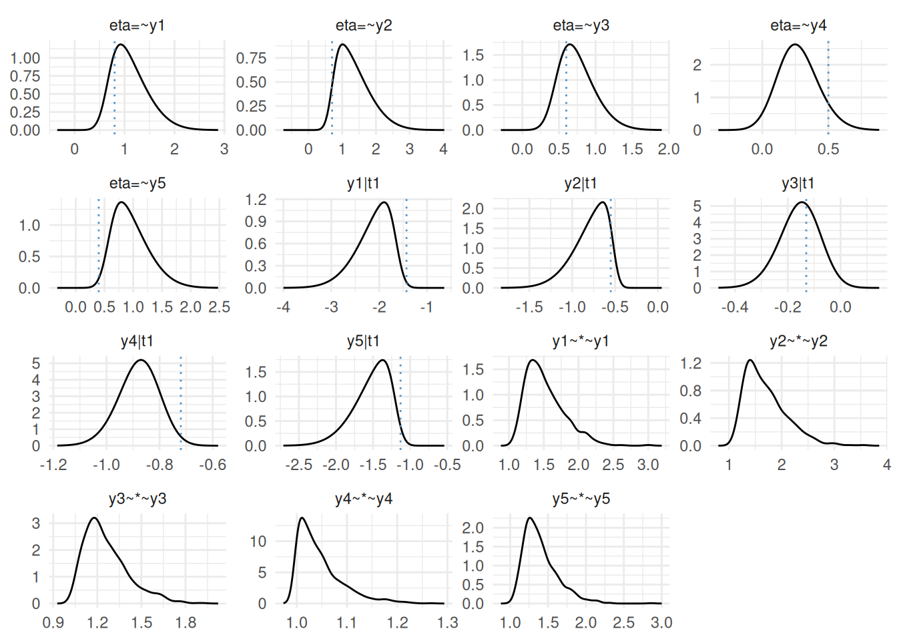

library(INLAvaan)
library(blavaan)
#> Loading required package: Rcpp
#> This is blavaan 0.5-10
#> On multicore systems, we suggest use of future::plan("multicore") or
#> future::plan("multisession") for faster post-MCMC computations.
set.seed(161)
# Generate data
n <- 250
truval <- c(0.8, 0.7, 0.6, 0.5, 0.4, -1.43, -0.55, -0.13, -0.72, -1.13)
dat <- lavaan::simulateData(
"eta =~ 0.8*y1 + 0.7*5y2 + 0.6*y3 + 0.5*y4 + 0.4*y5
y1 | -1.43*t1
y2 | -0.55*t1
y3 | -0.13*t1
y4 | -0.72*t1
y5 | -1.13*t1",
ordered = TRUE,
sample.nobs = n
)
head(dat)
#> y1 y2 y3 y4 y5
#> 1 2 2 1 2 2
#> 2 2 1 1 1 2
#> 3 2 2 2 1 2
#> 4 1 1 1 1 2
#> 5 2 2 1 2 2
#> 6 2 2 1 1 1
# Fit INLAvaan model
mod <- "eta =~ y1 + y2 + y3 + y4 + y5"
fit <- acfa(mod, dat, ordered = TRUE, std.lv = TRUE, estimator = "PML")
#> ℹ Finding posterior mode.
#> ✔ Finding posterior mode. [160ms]
#>
#> ℹ Computing the Hessian.
#> ✔ Computing the Hessian. [268ms]
#>
#> ℹ Performing VB correction.
#> ✔ VB correction; mean |δ| = 0.104σ. [731ms]
#>
#> ⠙ Fitting skew normal to 0/10 marginals.
#> ⠹ Fitting skew normal to 4/10 marginals.
#> ✔ Fitting skew normal to 10/10 marginals. [849ms]
#>
#> ⠙ Computing ppp and DIC.
#> ✔ Computing ppp and DIC. [538ms]
#>
summary(fit)
#> INLAvaan 0.2.3.9004 ended normally after 37 iterations
#>
#> Estimator BAYES
#> Optimization method NLMINB
#> Number of model parameters 10
#>
#> Number of observations 250
#>
#> Model Test (User Model):
#>
#> Marginal log-likelihood -1093.586
#> PPP (Chi-square) 0.000
#>
#> Information Criteria:
#>
#> Deviance (DIC) 2565.844
#> Effective parameters (pD) 227.574
#>
#> Parameter Estimates:
#>
#> Parameterization Theta
#> Marginalisation method SKEWNORM
#> VB correction TRUE
#>
#> Latent Variables:
#> Estimate SD 2.5% 97.5% NMAD Prior
#> eta =~
#> y1 0.854 0.382 0.240 1.721 0.096 normal(0,10)
#> y2 0.622 0.236 0.227 1.148 0.029 normal(0,10)
#> y3 0.623 0.236 0.227 1.149 0.023 normal(0,10)
#> y4 1.195 0.499 0.437 2.352 0.077 normal(0,10)
#> y5 0.518 0.229 0.121 1.018 0.050 normal(0,10)
#>
#> Thresholds:
#> Estimate SD 2.5% 97.5% NMAD Prior
#> y1|t1 -2.430 0.571 -0.075 -3.746 0.310 normal(0,1.5)
#> y2|t1 -0.853 0.151 -0.168 -1.299 0.112 normal(0,1.5)
#> y3|t1 -0.315 0.087 0.040 -0.512 0.017 normal(0,1.5)
#> y4|t1 -1.350 0.425 -0.521 -2.188 0.220 normal(0,1.5)
#> y5|t1 -1.289 0.172 -0.534 -1.738 0.186 normal(0,1.5)
#>
#> Variances:
#> Estimate SD 2.5% 97.5% NMAD Prior
#> .y1 1.000
#> .y2 1.000
#> .y3 1.000
#> .y4 1.000
#> .y5 1.000
#> eta 1.000
#>
#> Scales y*:
#> Estimate SD 2.5% 97.5% NMAD Prior
#> y1 1.347 0.232 1.049 1.904
#> y2 1.196 0.138 1.024 1.529
#> y3 1.202 0.127 1.034 1.493
#> y4 1.577 0.390 1.111 2.562
#> y5 1.144 0.115 1.008 1.429
plot(fit, truth = truval)